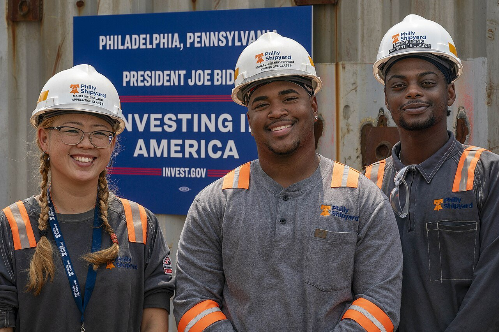
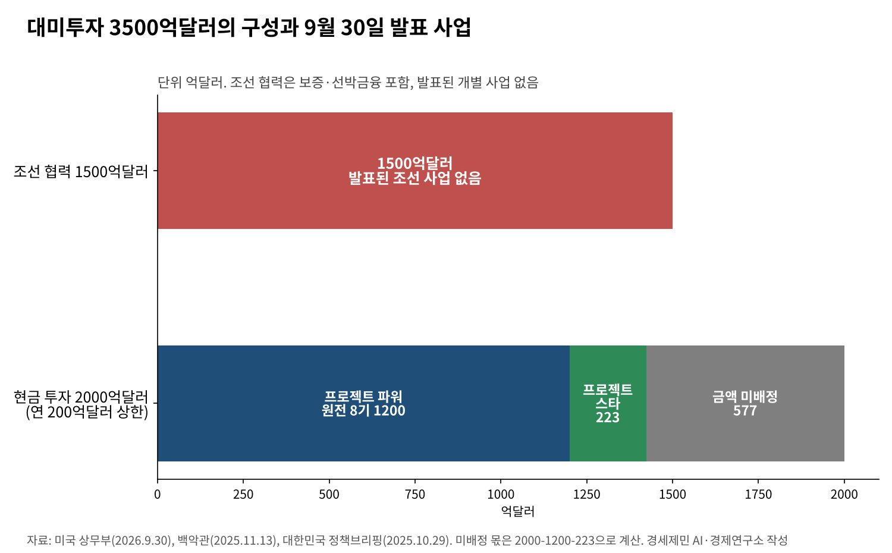
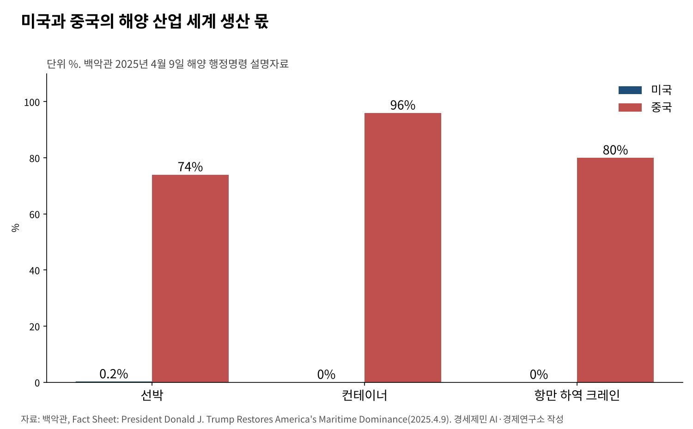

[트럼프 관세전쟁⑦] 「마스가」 1500억달러, 승인 1년 다 돼도 조선 사업 목록은 아직
미국이 승인한 조선 투자 1500억달러, 보증과 선박금융 담은 한국 기업 주도 구조
백악관 자료로 미국 선박 건조 몫 0.2%, 중국 74%… 비어 있는 미국 조선소
미중 해운·조선 301조 조치 1년 유예 11월 끝나, 한국 조선의 기회와 위험
AI경제저널=김갑봉 기자 | 한국이 지난해 7월 관세협상 막판에 내민 카드가 「마스가」다. 미국 조선업을 다시 위대하게 하자는 구상이다. 백악관은 11월 한국의 조선 분야 투자 1500억달러를 승인했다고 밝혔다.
1년 가까이 지난 지금, 대미투자는 첫 사업을 냈다. 미 상무부가 9월 30일 발표한 사업은 가스발전과 원전, 알래스카 가스전이다. 관세를 15%로 낮춘 지렛대였던 조선 사업은 그 목록에 없었다.
마스가가 어떤 틀로 짜였는지, 미국 조선업은 어디에 서 있는지 정부 원문으로 짚는다. 미중 해운 분쟁의 1년 유예가 끝나는 11월을 앞두고 한국 조선이 따질 셈법도 살핀다.

1500억달러는 보증과 선박금융의 묶음
정부가 지난해 10월 29일 밝힌 합의에서 대미투자 3500억달러는 둘로 나뉜다. 현금 투자 2000억달러와 조선 협력 1500억달러다. 정부는 조선 협력을 「마스가 프로젝트」라고 불렀다.
정부 설명을 보면 조선 협력은 한국 기업이 주도하고 보증과 선박금융을 포함한다. 해마다 200억달러 상한이 붙은 현금 투자와 달리 정부 돈이 직접 나가는 몫이 작다.
국회에 낸 특별법안은 한미전략투자기금을 대미투자와 조선협력 금융지원에 함께 쓰되 계정을 나눌 수 있게 했다. 이 법은 올해 3월 12일 국회 본회의를 통과했다.
백악관 공동 설명자료는 두 나라가 조선 실무협의체로 협력을 넓힌다고 적었다. 정비·수리·개조, 인력 양성, 공급망 회복력이 의제다. 미국은 한국의 핵추진 공격잠수함 건조도 승인했다.

미국 선박 건조 몫 0.2%, 비어 있는 조선소
미국이 한국 조선을 찾는 까닭은 백악관 자료에 숫자로 나온다. 지난해 4월 9일 해양 행정명령 설명자료는 세계 선박 생산에서 미국 몫을 0.2%, 중국 몫을 74%로 적었다.
컨테이너 생산은 미국 0%, 중국 96%다. 항만 하역 크레인도 미국 0%, 중국 80%다. 배를 만드는 일부터 짐을 싣고 내리는 장비까지 공급망이 한 나라에 몰렸다.
행정명령은 해양 행동계획을 세우고 해양안보 신탁기금과 조선 금융지원 제도를 만들라고 지시했다. 지역 개발 특구를 본뜬 해양번영구역도 넣었다. 돈과 제도를 깔고 배를 지을 손을 밖에서 찾는 셈이다.
조선은 노동집약 산업이다. 숙련공과 협력업체가 한 지역에 모여야 생산성이 오른다. 수십년 비어 있던 미국 조선소는 설비보다 사람과 협력업체망이 먼저 모자란다.

301조 항만 수수료, 11월 유예 끝나
무역대표부는 지난해 4월 17일 중국의 해운·물류·조선 장악에 맞서 301조 조치를 내놨다. 중국 해운사와 중국산 선박이 미국 항구에 들어올 때 수수료를 매기는 내용이다.
외국산 자동차운반선에도 수수료를 물렸다. 3년 뒤에는 미국산 액화천연가스(LNG)를 외국 선박으로 실어 나르는 일을 제한한다. 이 제한은 22년에 걸쳐 단계적으로 커진다.
미국산 LNG를 실을 미국산 운반선 수요가 생긴다는 뜻이다. 미국 안에 LNG 운반선을 지을 조선소가 없으면 그 수요는 채울 수 없다. 한국 조선소가 미국에 거점을 두려는 까닭이다.
미중은 지난해 10월 30일 부산 정상회담 뒤 휴전에 들어갔다. 백악관은 11월 1일 이 301조 조치의 집행을 11월 10일부터 1년간 미룬다고 밝혔다. 중국도 해운 기업 제재를 풀기로 했다.
유예는 올해 11월에 끝난다. 미중은 9월 워싱턴 정상회담에서 휴전을 몇 달 늘린 것으로 평가된다. 해운 조치가 되살아나면 한국 조선에는 수요가, 미국에 투자한 한국 기업에는 중국의 견제가 함께 온다.
필리조선소, 한국 조선의 첫 미국 거점
한화는 2024년 6월 필라델피아의 필리조선소를 1억달러에 사기로 했고 그해 12월 인수를 마쳤다. 한국 조선사가 미국 조선업에 처음 들어간 사례다.
한국 조선사의 미 해군 일감도 늘었다. 한화오션은 2024년 7월 미 해군 함정정비협약을 맺었다. 그해 8월 보급함 월리 시라호 정비를 따내 거제 조선소에서 수리했다.
조선소 하나로 마스가를 채울 수는 없다. 1500억달러가 보증과 금융의 묶음인 만큼 미국 선주의 주문과 미국 조선소의 건조 능력이 함께 늘어야 한다. 주문이 없으면 보증은 쓰일 곳이 없다.
조선 카드가 사업이 되려면
첫째는 사업 목록이다. 현금 투자는 원전 1200억달러, 가스발전 223억달러를 잡았다. 조선 1500억달러는 아직 이름 붙은 사업이 없다. 어느 조선소에 무엇을 짓는지가 나와야 약속이 숫자로 바뀐다.
둘째는 사람이다. 백악관 자료가 인력 양성을 협력 의제로 올린 것은 미국 조선소의 병목이 숙련 노동이라는 뜻이다. 한국의 기술 인력과 교육 체계를 함께 옮기는 설계가 필요하다.
셋째는 중국 변수다. 미중 해운 분쟁이 다시 불붙으면 미국에 진출한 한국 조선사가 중국 보복의 표적이 될 수 있다. 정부는 기업이 떠안는 지정학 위험을 보증과 외교로 나눠야 한다.
마스가는 관세를 낮추는 데 쓴 약속이다. 그 약속이 한국 조선의 미국 생산 기반으로 남을지는 사업 목록과 인력 계획에 달렸다. 유예가 끝나는 11월이 그 시험대다.
참고문헌
기관 자료
- 백악관, "Joint Fact Sheet on President Donald J. Trump's Meeting with President Lee Jae Myung", 2025년 11월 13일. https://www.whitehouse.gov/fact-sheets/2025/11/joint-fact-sheet-on-president-donald-j-trumps-meeting-with-president-lee-jae-myung/
- 백악관, "Fact Sheet: President Donald J. Trump Restores America's Maritime Dominance", 2025년 4월 9일. https://www.whitehouse.gov/fact-sheets/2025/04/fact-sheet-president-donald-j-trump-restores-americas-maritime-dominance/
- 백악관, "Fact Sheet: President Donald J. Trump Strikes Deal on Economic and Trade Relations with China", 2025년 11월 1일. https://www.whitehouse.gov/fact-sheets/2025/11/fact-sheet-president-donald-j-trump-strikes-deal-on-economic-and-trade-relations-with-china/
- 미국 무역대표부(USTR), "USTR Section 301 Action on China's Targeting of the Maritime, Logistics, and Shipbuilding Sectors for Dominance", 2025년 4월 17일. https://ustr.gov/about/policy-offices/press-office/press-releases/2025/april/ustr-section-301-action-chinas-targeting-maritime-logistics-and-shipbuilding-sectors-dominance
- 미국 상무부, "Korea and the United States Announce Historic Strategic Investment Projects", 2026년 9월 30일. https://www.commerce.gov/news/press-releases/2026/09/korea-and-united-states-announce-historic-strategic-investment-projects
- 대한민국 정책브리핑, 「한미, 관세협상 타결…자동차관세 15%·현금투자 연 200억 달러 상한」, 2025년 10월 29일. https://www.korea.kr/news/policyNewsView.do?newsId=148953418
- 대한민국 정책브리핑, 「'한미 전략적 투자 특별법' 대표 발의…'자동차 관세 15%' 소급 적용」, 2025년 11월 26일. https://www.korea.kr/news/policyNewsView.do?newsId=148955438
- 한화오션, "Hanwha Ocean secures South Korea's first U.S. Navy MRO project"(보도자료, 웹아카이브), 2024년 9월 4일. https://web.archive.org/web/20240904133913/https://www.hanwha.com/newsroom/news/press-releases/hanwha-ocean-secures-south-koreas-first-us-navy-mro-project.do
연구 논문과 보고서
- 전략국제문제연구소(CSIS), "Takeaways from the Trump-Xi White House Summit", 2026년 9월 28일. https://www.csis.org/analysis/takeaways-trump-xi-white-house-summit
언론 보도
- 뉴스핌, 「현대차 관세 리스크 낮아지나…대미투자특별법 효과 주목」, 2026년 3월 13일. https://www.newspim.com/news/view/20260313000825
- 네이벌뉴스, "Hanwha Ocean becomes first South Korean shipyard to secure U.S. Navy MRO contract"(웹아카이브), 2024년 8월 29일. https://web.archive.org/web/20240829113657/https://www.navalnews.com/naval-news/2024/08/hanwha-ocean-becomes-first-south-korean-shipyard-to-secure-u-s-navy-mro-contract/
- 위키백과, "Philly Shipyard"(브레이킹디펜스 2024년 6월 20일 보도 인용), 2026년 10월 21일 열람. https://en.wikipedia.org/wiki/Philly_Shipyard
- 위키백과, 「필리 조선소」, 2026년 10월 21일 열람. https://ko.wikipedia.org/wiki/필리_조선소
[사진 출처]
- [사진1] The White House, "Workers at the Philadelphia Shipyard wait for President Joe Biden's visit, Thursday, July 20, 2023, in Philadelphia (P20230720CV-0024).jpg", 위키미디어 공용, 퍼블릭 도메인. https://commons.wikimedia.org/wiki/File:Workers_at_the_Philadelphia_Shipyard_wait_for_President_Joe_Biden's_visit,_Thursday,_July_20,_2023,_in_Philadelphia_(P20230720CV-0024).jpg
※ 이 기사는 AI 프로그램 클로드를 활용해 작성했습니다.
관련기사
- [트럼프 관세전쟁①] 트럼프 관세압박, 미국이라고 다 유리할까
- [트럼프 관세전쟁②] 일본과 베트남은 왜 그래야만 했을까
- [트럼프 관세전쟁③] EU는 왜 어떻게 15%를 수용했나
- [트럼프 관세전쟁④] 「나머지는 15~20%」 발언과 한미 관세협상
저작권자 © AI경제저널 무단전재 및 재배포, AI학습 및 활용 금지